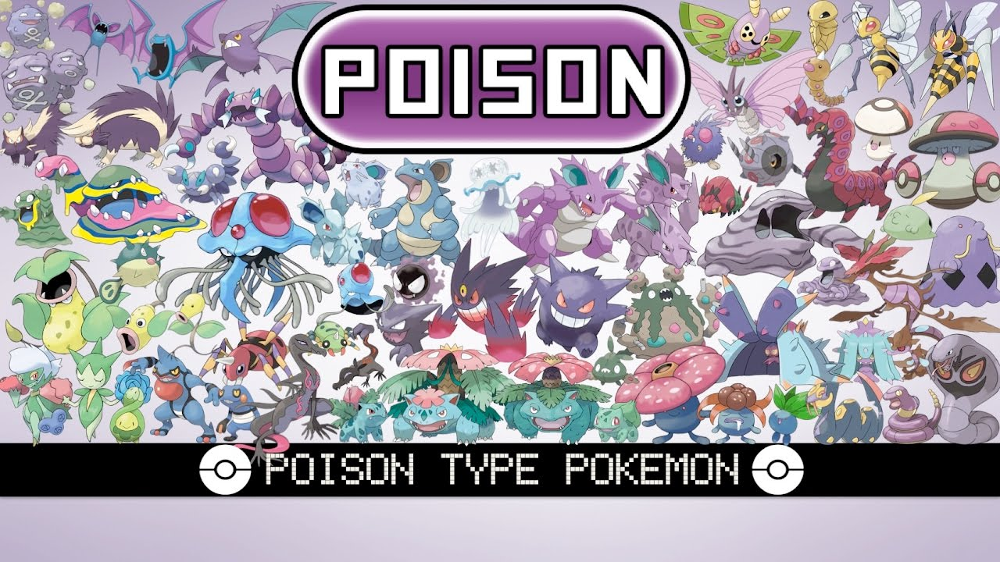

Poison-Type Pokemon
Poison-type Pokémon have long been a captivating aspect of the Pokémon universe, embodying a unique blend of danger, strategy, and often, a touch of eerie charm. From the earliest generations to the most recent additions, these creatures have consistently left their mark on trainers and adversaries alike, both in battles and in the hearts of fans worldwide. At the core of their allure lies their distinctiveness. Poison-types boast a diverse array of forms and abilities, ranging from the classic toxicity of Koffing and Grimer to the more enigmatic designs of Dragalge and Salazzle. This variety not only offers a wide range of aesthetic preferences but also ensures a rich tapestry of strategic possibilities in battles. Their dual typings, often coupled with secondary attributes such as Flying, Ghost, or Psychic, further deepen their complexity, challenging trainers to devise inventive tactics to exploit their strengths and mitigate their weaknesses. In battle, Poison-types excel at wearing down opponents over time, capitalizing on their insidious status-inflicting moves and abilities. Toxic, the quintessential poison move, gradually saps away an opponent's health, making it a potent tool for outlasting foes in prolonged engagements. Meanwhile, abilities like Corrosion enable certain Poison-types to afflict even typically immune Pokémon with poisoning, further expanding their tactical utility. Beyond their prowess in combat, Poison-types also play a crucial role in shaping the narrative fabric of the Pokémon world. Many Poison-type Pokémon inhabit environments tainted by human pollution or natural toxins, serving as poignant reminders of the delicate balance between civilization and nature. Their presence often prompts reflection on real-world environmental issues, underscoring the franchise's capacity for storytelling with real-world relevance. Furthermore, Poison-types frequently feature prominently in the lore and aesthetics of various regions, adding depth and richness to their respective cultural landscapes. Whether revered as guardians of toxic swamps or feared as harbingers of ecological disaster, these creatures leave an indelible imprint on the imaginations of trainers and researchers alike. In conclusion, Poison-type Pokémon stand as a testament to the creativity and depth of the Pokémon universe. From their diverse designs and strategic versatility to their roles in storytelling and world-building, these creatures continue to captivate and inspire fans across generations. As trainers embark on their journeys, Poison-types remain steadfast companions, reminding us of the beauty and complexity inherent in all aspects of the Pokémon world.
